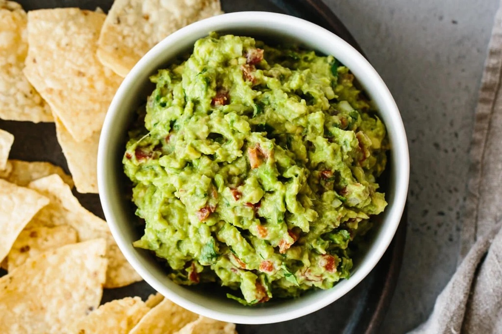
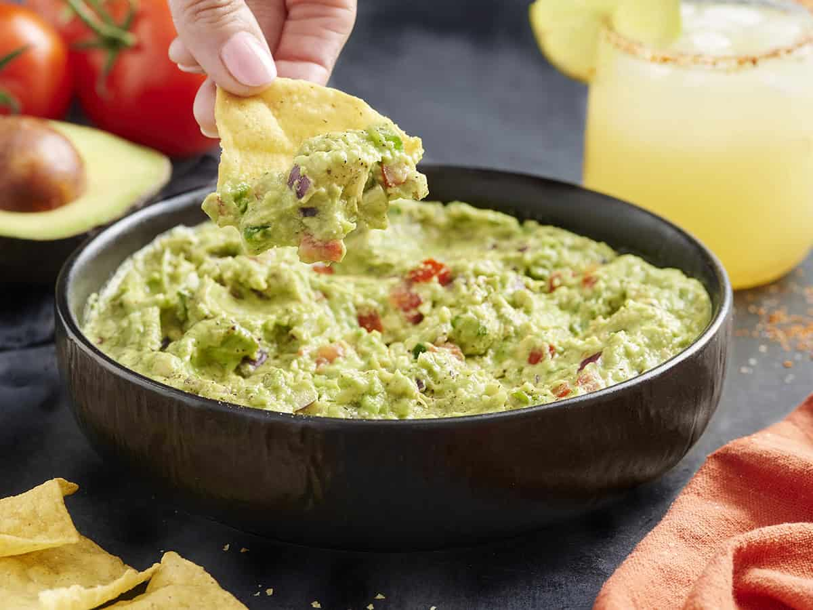

Guacamole
When you need to make a dip that will be a hit but is also very easy to make, this guacamole will never let you down.
Enjoy it with the best tortilla chips you can find.

Ingredients
- 3 Avocados
- 1/2 Small Yellow Onion, finely diced
- 2 Roma Tomatoes, diced
- 3 Tbsp Cilantro, finely diced
- 1 Jalapeno Pepper, seeded and finely diced
- 2 Garlic Cloves, minced
- 1 Lime, juiced
- 1/2 tsp kosher salt
Steps
- Slice the avocados in half, remove the pit, and scoop into a mixing bowl.
- Mash the avocado with a fork and make it as chunky or smooth as you'd like.
- Add the remaining ingredients and stir together.
Give it a taste test and add a pinch more salt or lime juice if needed.
- Serve the guacamole with tortilla chips.
